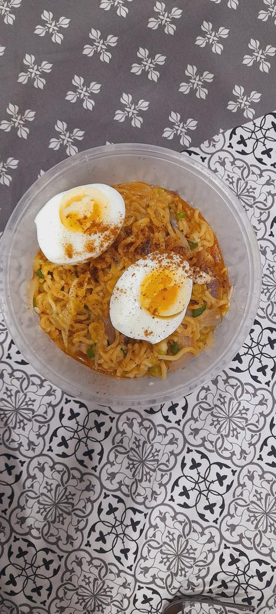
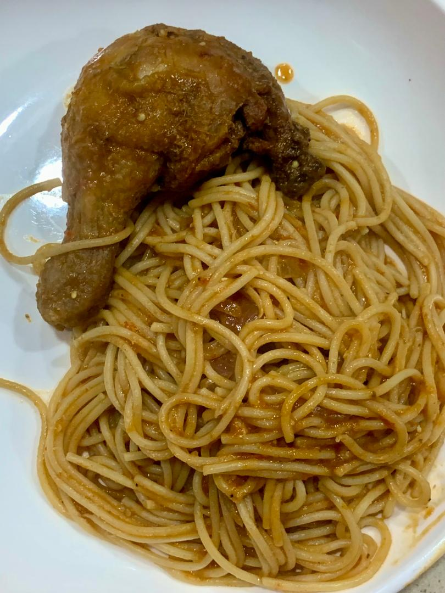

Toast bread
For 2 portions:
Ingredients:
- 4 slices of bread
- stew or sauce of choice
Preparations:
- toast the bread in a toaster
- enjoy with your preferred sauce or stew

Noodles
For 2 portions:
Ingredients:
- 2 packs of instant noodles
- 1 small onion
- 1 egg
- Veggies of your choice
Preparations:
- Add the noodles to about a cup of boiling water
- Cook for about 2 minutes then add seasoning.
- Boil your egg for about 10-15 minute
- add the veggies to the noodles and enjoy

Spaghetti
For 2 portions:
Ingredients:
- A pack of spaghetti
- 1 onion
- pepper
Preparations:
- boil the spaghetti
- cook and enjoy